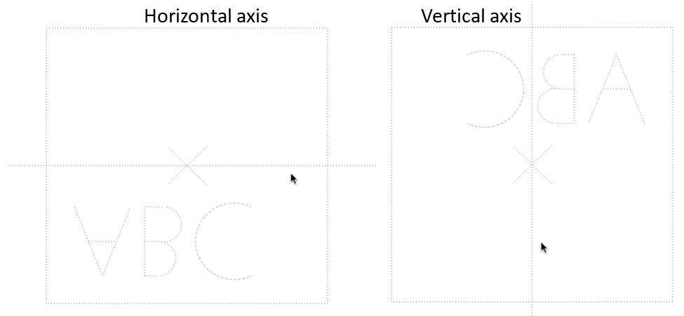

1.1 Why?
This tool mirrors an entire project in one step. But why not use Archicad’s existing Mirror tool? Although the whole project model can already be mirrored in one step, there are some major clean-up issues to address:
- All annotation in section and elevation views will end up in the wrong place and the wrong way around. The difference can be extreme and difficult to fix.
- All cropped project views embedded in layouts will show the wrong part of the drawing and may be entirely blank. This will necessitate viewing the whole drawing, re-cropping and repositioning.
Anyone working routinely with template projects will find this a huge chore, to the point where it can be easier to store multiple versions of the project rather than repeat the mirroring exercise multiple time, but this can lead to problems synchronising changes.
The Transformer tool takes care of the whole mirroring process (including sections, elevations and layouts) in one, easy step.
1.2 Mirroring a Project
To start the mirroring process:
Click the menu item CI Tools > Transformer > Mirror Project…
Click the start point for the mirror axis line.
The tool will display a guide to the mirror action on the project, which can only be across a horizontal or vertical line (other angles are not currently supported, but let us know if that’s important to you). The image will dynamically switch between the horizontal and vertical axis depending on which is closer to your mouse

Click when the axis is in the desired direction and the mirroring will be actioned. Alternatively, press escape to cancel the mirror process.
1.3 Mirroring Notes
There is an issue in Archicad that often causes angular dimensions and level dimensions to fail to mirror in section and elevation views. We hope GS will address this issue in AC25.
Also, although the Mirror action is undoable, Archicad does not support undo for the cropping changes in layouts – these will remain mirrored if you select Edit > Undo
Getting Started
Release Notes - Transformer
Release notes - Transformer - 1.03
Bug
TRAN-2 Problem mirroring Roof coverings, problem mirroring a project
TRAN-4 associated labels not mirrored
TRAN-11 Elevations Markers shift location after Mirroring
TRAN-14 Additional 2D elements drawn in Interior Elevation views are not mirrored